YOUMA
Formation du personnel
Prendre les commandes, préparer, encaisser, contrôler la sortie, suivre la journée.
- Tout le monde : se connecter
- Serveur ou serveuse : prendre une commande
- Cuisine, grill, bar : préparer
- Caisse : ouvrir, encaisser, clôturer
- Contrôle de sortie
- Gérant et propriétaire
- Exercice de fin de formation
- Chacun a son propre code PIN (4 à 6 chiffres). On ne le prête jamais : tout est enregistré à votre nom.
- On travaille sans Internet : si Internet coupe, on continue de vendre.
- 5 codes faux de suite bloquent la personne 5 minutes.
1. Tout le monde : se connecter
Tous les postes- Toucher son nom.
- Taper son code PIN, puis Entrer.
- En quittant le poste (pause, fin de service) : Changer d'utilisateur, en haut à droite.
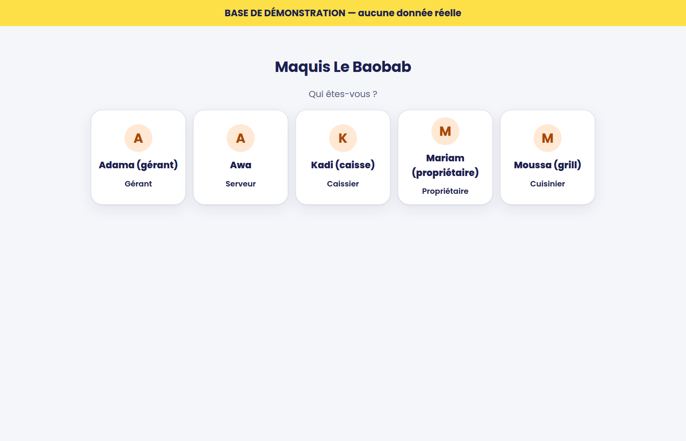
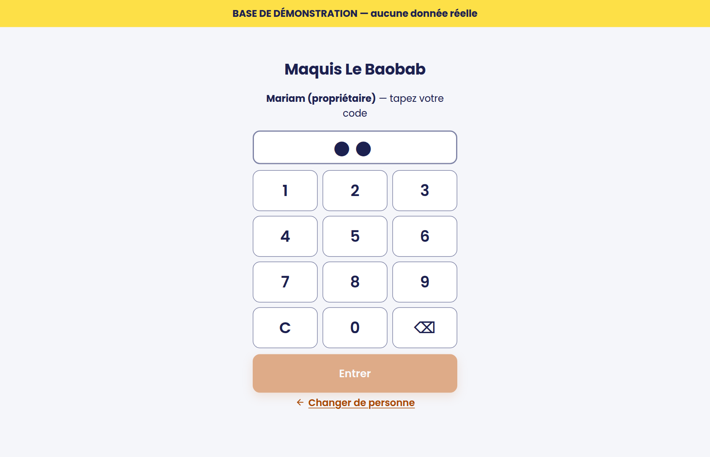
2. Serveur ou serveuse : prendre une commande
ServeursÀ table
- Menu Salle : toucher la table (vert = libre, orange = occupée).
- Choisir la catégorie (Boissons, Grillades…), puis toucher les plats. Toucher deux fois = 2 articles.
- Grande quantité : toucher le nombre à côté du plat et taper la quantité (ex. 24).
- Toucher le nom d'un plat pour une option ou une note (« sans piment »).
- Envoyer : les bons partent en cuisine et au bar.
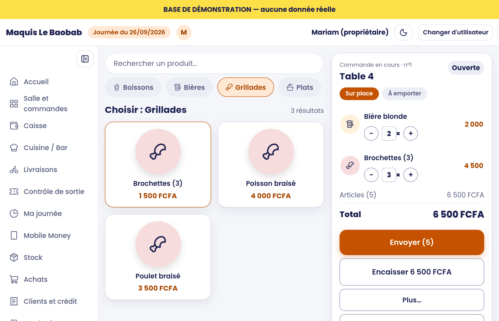
Tournée suivante : revenir sur la même table, ajouter, Envoyer. Quand la cuisine a fini, la table affiche Prêt.
Emporter ou livraison : Salle → + Emporter / livraison. En livraison : quartier et téléphone du client.
Sur le téléphone
Même écran, en plus serré : la commande s'ouvre en bas avec Voir la commande (n).
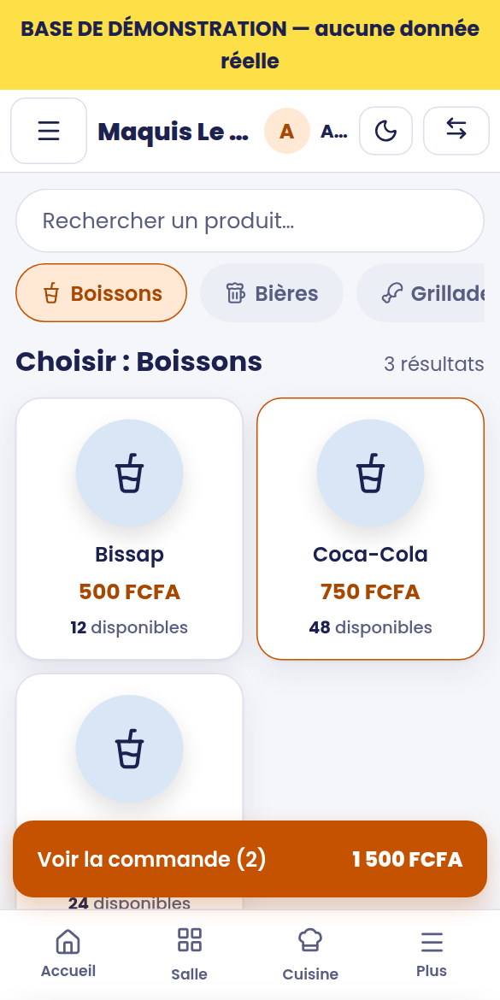
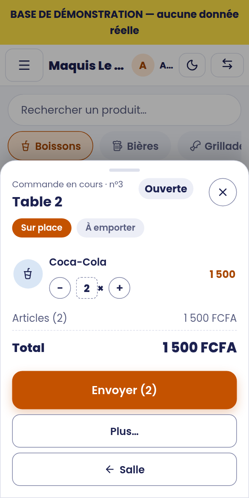
Erreurs fréquentes
- Article pas encore envoyé : le retirer avec − ou taper 0.
- Article déjà envoyé : le toucher → Annuler, choisir le motif ; le PIN du gérant est demandé.
- Table ouverte par erreur (rien d'envoyé) : dans la Salle, Libérer sous la table. Si des plats ont été envoyés, Youma refuse : encaisser, ou faire annuler par le gérant.
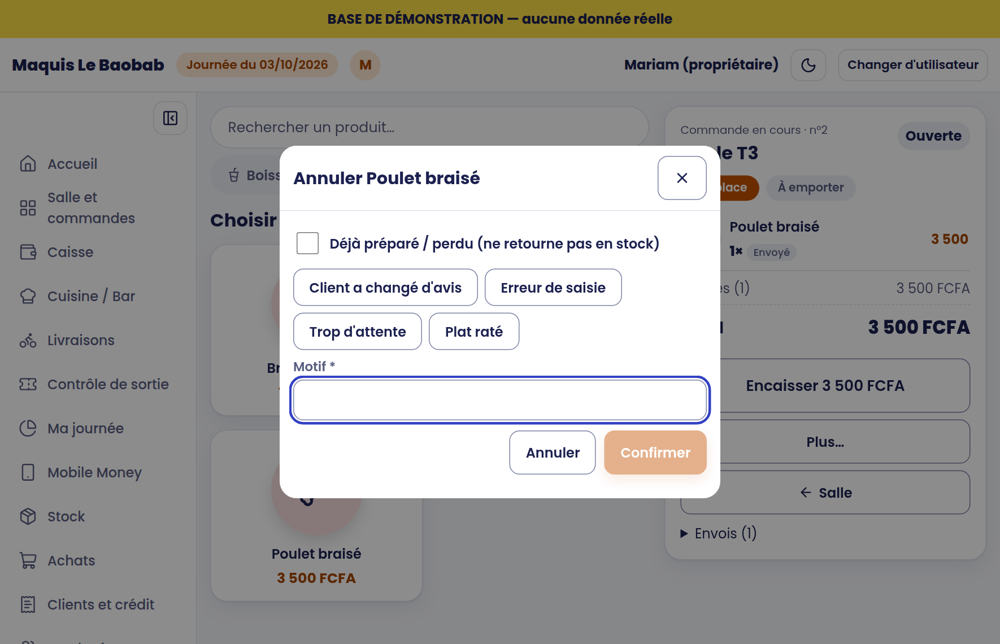
3. Cuisine, grill, bar : préparer
Cuisine Grill Bar- Menu Cuisine / Bar : les bons arrivent tout seuls, les plus anciens en premier.
- En préparation quand on commence, Prêt quand c'est fini : le serveur voit « Prêt » sur sa table.
- Servi quand le plat est parti.
- Produit manquant (« plus de poulet ») : Problème, puis écrire ce qui manque : le serveur est prévenu.
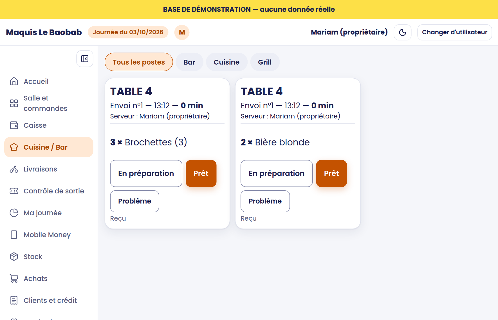
Les bons s'impriment aussi à l'imprimante du poste, si elle est installée.
4. Caisse : ouvrir, encaisser, clôturer
CaissierEn début de service
Menu Caisse : compter l'argent du tiroir, taper le fond de caisse compté, puis ouvrir la session. S'il y a une différence avec le fond prévu, donner le motif.
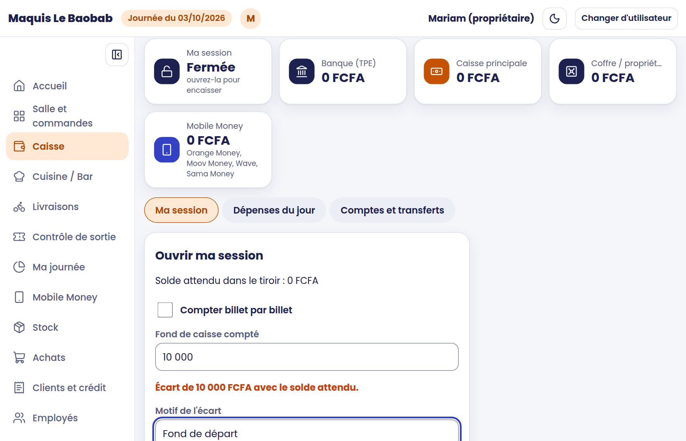
Encaisser une addition
- Ouvrir la commande → Encaisser ….
- Toucher le moyen de paiement :
- Espèces : taper le billet reçu dans « Espèces reçues du client » : la monnaie à rendre s'affiche.
- Orange Money / Moov / Wave : taper la référence de la transaction lue sur le téléphone du client.
- Carte (TPE) : taper le numéro d'autorisation imprimé par le TPE.
- Crédit : seulement pour un client connu, autorisé par le gérant.
- Plusieurs moyens : toucher un second moyen et répartir. Puis Valider le paiement.
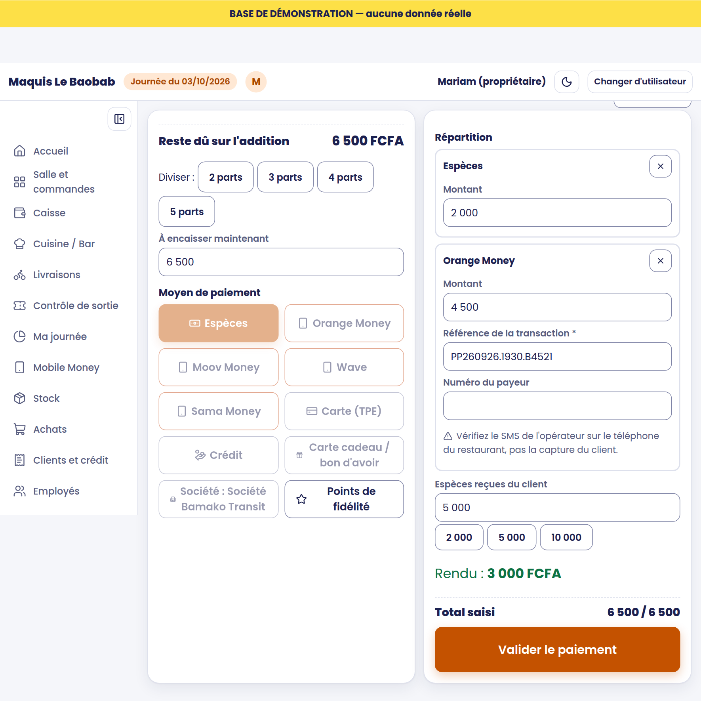
Imprimer le ticket (bon de sortie) : le client garde ce ticket et le montre à la sortie.
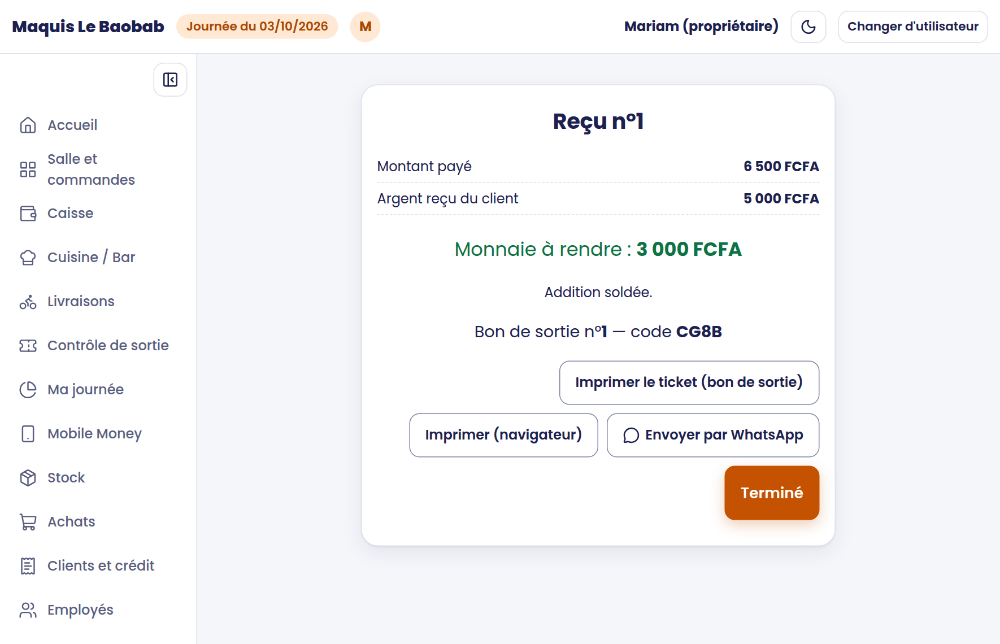
Carte cadeau, société, points de fidélité
- Carte cadeau ou bon d'avoir : à l'encaissement, Carte cadeau / bon d'avoir, taper le code, Vérifier le solde. Le solde baisse du montant payé. Le client peut compléter avec un autre moyen.
- Société sous contrat : Société : …, taper le nom de l'employé ; la société paie sa part (inscrite sur son compte), l'employé paie le reste.
- Points de fidélité : choisir le client sur l'addition, puis Points de fidélité ; les points deviennent une réduction.
- Vendre une carte cadeau : Clients → Cartes cadeaux → Vendre une carte cadeau, encaisser, remettre la carte imprimée.
En fin de service
- Caisse → Clôturer ma caisse.
- Compter billet par billet (le plus sûr) ou taper le total.
- Écart : le motif est obligatoire.
- Fond gardé dans le tiroir : laisser la monnaie pour le prochain service ; le reste est remis au coffre.
- Imprimer le rapport de clôture (Z) et le remettre au gérant avec l'argent remis au coffre.
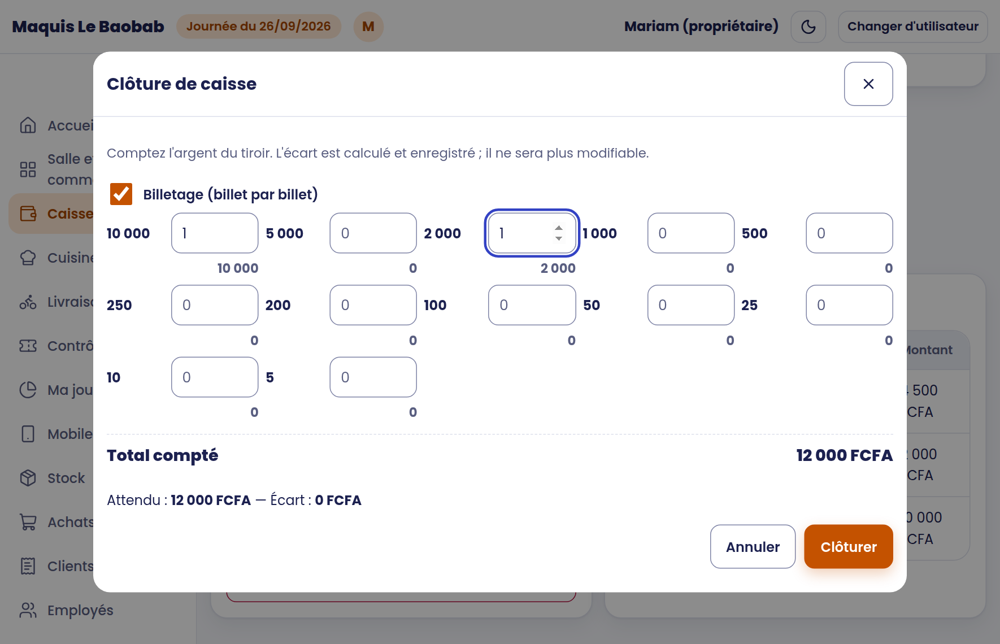
5. Contrôle de sortie
Vigile Caissier- Menu Contrôle de sortie : taper le N° du bon de sortie et le code de contrôle du ticket.
- Lire la réponse :
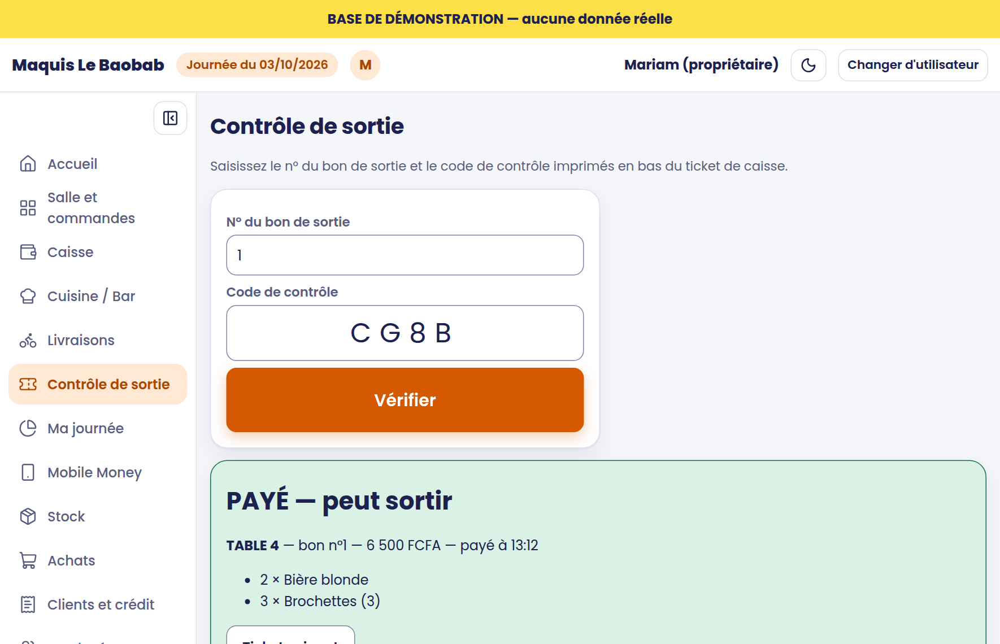
6. Gérant et propriétaire
Gérant PropriétaireOuvrir et clôturer la journée
- Le matin : Accueil → Ouvrir la journée. Sans journée ouverte, personne ne peut vendre.
- Le soir, toutes les caisses clôturées : Accueil → Clôturer la journée (Youma fait une sauvegarde).
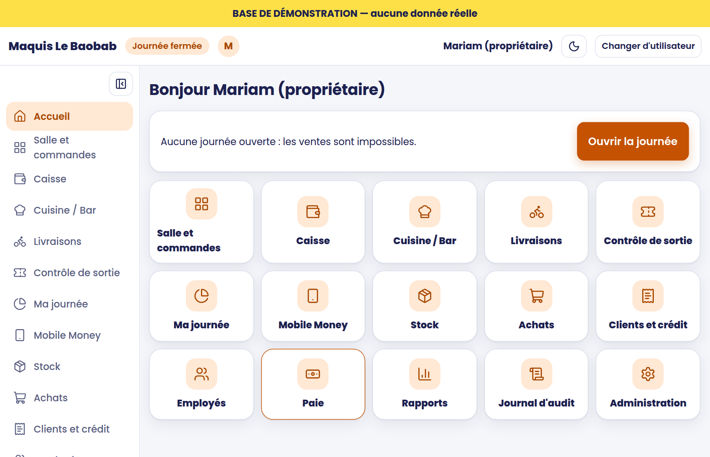
Le PIN du gérant
Demandé pour annuler un article envoyé, une remise au-delà du plafond, certains retraits. Le gérant tape son PIN lui-même : ne jamais le donner. Après 5 PIN faux en 15 minutes, les autorisations sont bloquées 5 minutes sur ce compte.
Client mécontent, client privilégié
Clients → Cartes cadeaux → Offrir un bon d'avoir (motif obligatoire, PIN du gérant). Fiche du client → Rendre privilégié : ses commandes à distance passent en tête ; les tables restent par ordre d'arrivée.
Avis des clients
Le client note sa commande (1 à 5) sur sa page de suivi. Tableau de bord : « Clients mécontents à rappeler » → Clients → Avis → rappeler le client puis Noter la suite. Rapports → Avis clients et Non honorées (refus, livraisons ratées, par motif, quartier, heure et numéro) pour décider.
Libérer une table
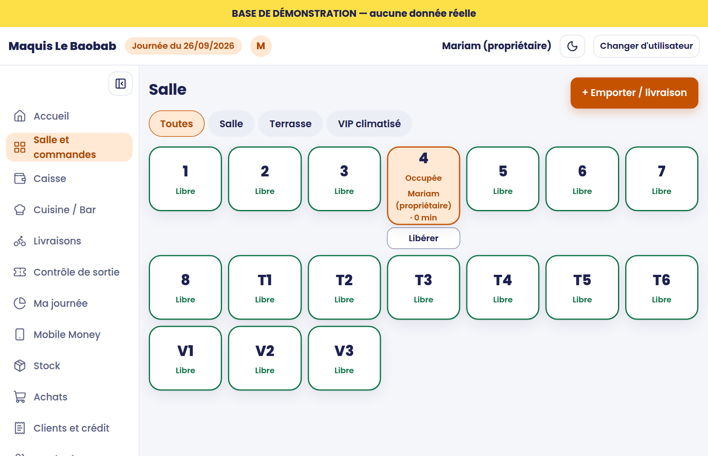
Chaque jour
- Ma journée : chiffre d'affaires, dépenses, bénéfice estimé, annulations, remises, stock critique ; Résumé par WhatsApp pour le propriétaire.
- Mobile Money : vérifier les paiements « à vérifier » avec le relevé de l'opérateur.
- Stock → Perte / sortie : casse, périmé, repas du personnel (motif choisi dans la liste).
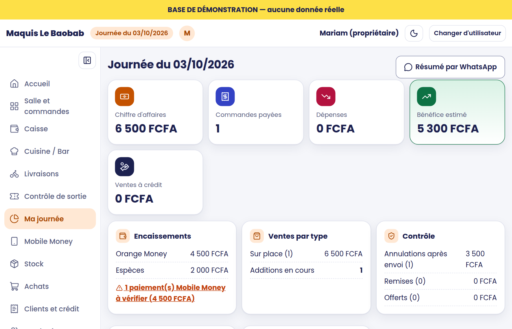
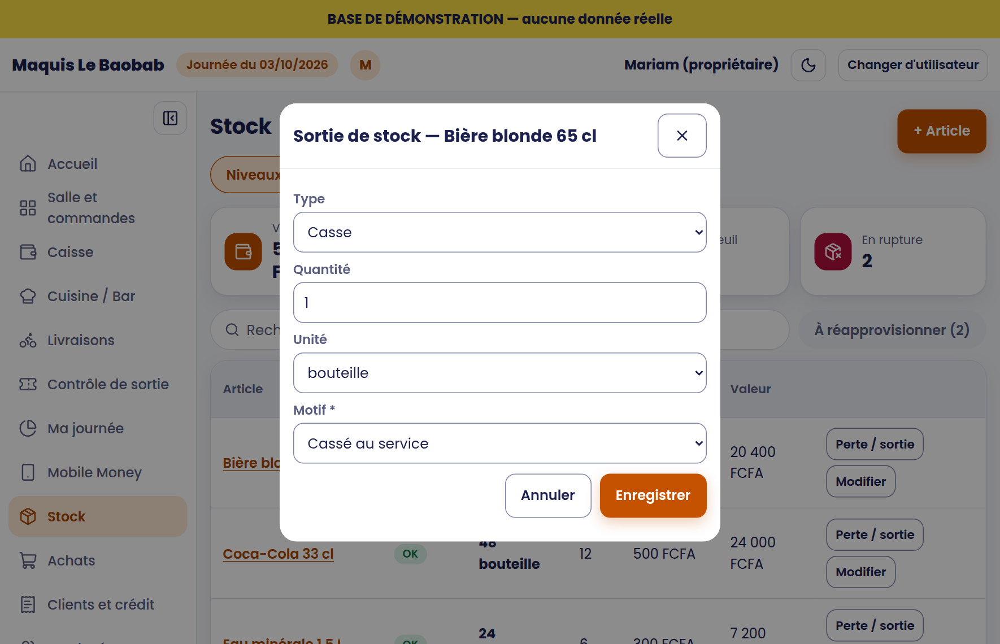
Administration (mot de passe personnel en plus du PIN) : produits et prix, tables, utilisateurs et PIN, paiements, imprimantes, sauvegardes, licence. Mot de passe oublié : Mot de passe oublié ? puis le code de secours noté à l'installation.
7. Exercice de fin de formation
Chacun, sur la vraie caisse, avant l'ouverture au public (15 minutes). Les ventes d'essai restent dans l'historique : le noter au gérant.
| Se connecter avec son PIN, puis « Changer d'utilisateur ». | |
| Serveur : une table, 2 boissons et 1 plat, Envoyer ; ajouter une tournée ; annuler un article avec le gérant. | |
| Cuisine : passer le bon en « Prêt », puis « Servi ». | |
| Caisse : encaisser une partie en espèces (vérifier la monnaie) et le reste en Mobile Money ; imprimer le bon de sortie. | |
| Sortie : contrôler ce bon (PAYÉ), puis une seconde fois (DÉJÀ PRÉSENTÉ). | |
| Gérant : clôturer la caisse d'essai et lire le rapport Z. |